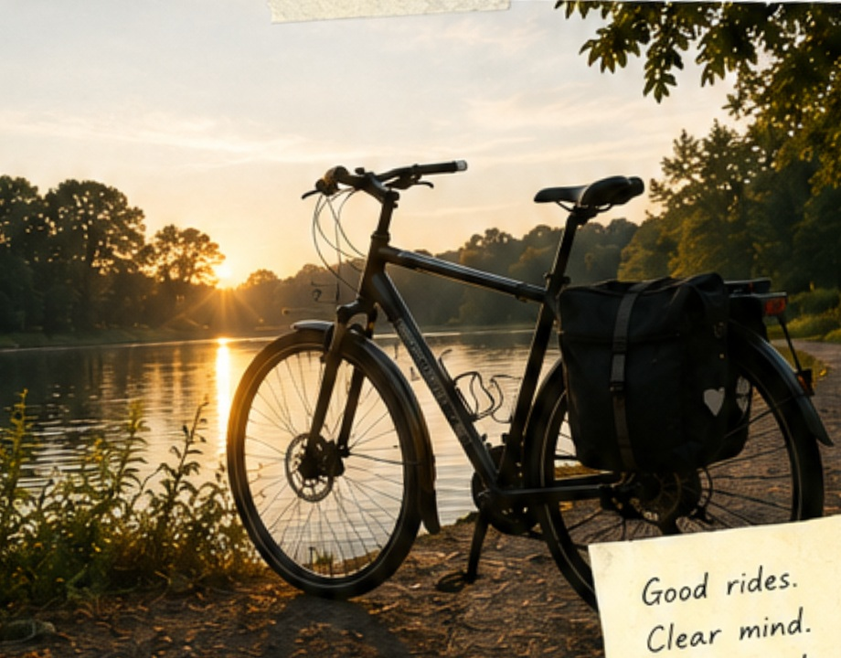
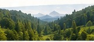

How I structure side projects
A look at my approach to keeping side projects simple, focused, and (somewhat) finishable.
I build stuff on the internet
and write about it.↘
Notes on web development, side projects,
systems, and the occasional ramble.

A look at my approach to keeping side projects simple, focused, and (somewhat) finishable.

Why small projects are underrated and how they compound over time.

Systems, habits, and mindset shifts that help me actually build consistently.
A part of what I do (and what this site runs on) goes back to people and the planet.
MORE ABOUT MY IMPACT →Donated to amazing organizations.
Thanks for being part of this.
Searches on Ecosia
fund reforestation.
You search.
Trees grow. ✚

Hosted on green via EcoMatcher.
Every visit helps
restore forests.